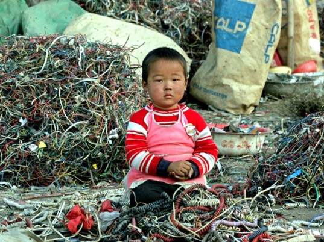

Because technology is so interwoven with our culture as a whole the world's problems of the same problems of face technology is privacy equality and recycling and education on the top concerns it seems the only way to really distinguish them depends on who you ask the corporate world of course the more concerned about return on investment but at a higher level all of these issues do impact each other in a very real way.
Electronics are not only difficult to recover, but they can also contaminate traditional textile recycling TThe absence of legislation addressing the disposal of e-textiles isn’t the only issue. Because the electronic components are small and strewn among reams of fabric, they are not only difficult recover, but they can also contaminate traditional textile recycling.
Although guidelines for wearable technology are nearly nonexistent, designers should scrutinize their product’s life cycle with a gimlet eye, researchers say.”Technology developers and product designers should implement waste preventative measures at the early phases in the development process of the emerging technology,” they explain. Will the garment be used for a long time? Can the components be easily removed? What about conductive fibers and yarns that contain silver, copper, or nickel? These are the questions we need to start asking before smart textiles rival—or even surpass—our existing e-waste pickle. Every day the world disposes of 130,000 tons of electronic waste, that is nearly 2.5 times the weight of the Titanic when fully loaded. On average only 10% of that waste is recycled. The remaining waste is largely put into landfills, where the lead, cadmium, mercury, and other poisonous heavy metals slowly poison our planet. Furthermore, many recyclers who promise to dispose of your computers, cell phones, and printers responsibly are sending them to developing nations such as China, India, and countries on the west coast of Africa to be burned in open pits, in an effort to extract precious metals. This allows the deadly chemicals in electronic waste finds its way into the environment and people. As consumers we feel powerless to fix this problem. We are faced with the very real issue. We have this hardware, in our supply rooms, closets, and basements, and we have no idea how to dispose of it and not contribute to this monumental problem.